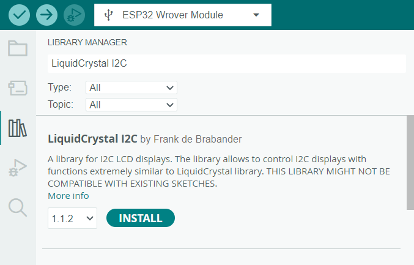

Écran LCD
L'écran LCD que nous allons utiliser est le I2C LCD1602. Grâce à un module de communication parralèle/série intégré il n'y a que 4 branchements à faire. Référez-vous aux images suivantes pour les branchements :

 Libre à vous d'utiliser les ports GPIO que vous souhaitez
Libre à vous d'utiliser les ports GPIO que vous souhaitez
Installation de la librairie
Dans Arduino IDE installez la librairie LiquidCrystal I2C.

Utilisation
L'extrait de code suivant est tiré d'un tutoriel de la documentation de Freenove. Il vous montre comment afficher un texte sur l'écran.
Pour écrire dans l'écran, on va positionner le curseur à l'endroit désiré avec la commmande setCursor(Colonne, Ligne) et ensuite écrire le texte désiré avec print("mon texte").
setCursor(Colonne, Ligne): Positionne le curseur à la colonne et la ligne spécifiéesprint("texte"): Affiche le texte à partir de la position du curseurclear(): Efface tout l'écran
Sources
- Freenove. (n.d.). Freenove/freenove_ultimate_starter_kit_for_esp32: Apply to FNK0047. https://github.com/Freenove/Freenove_Ultimate_Starter_Kit_for_ESP32
- ESP32 - LCD. ESP32 Tutorial. (n.d.). https://esp32io.com/tutorials/esp32-lcd